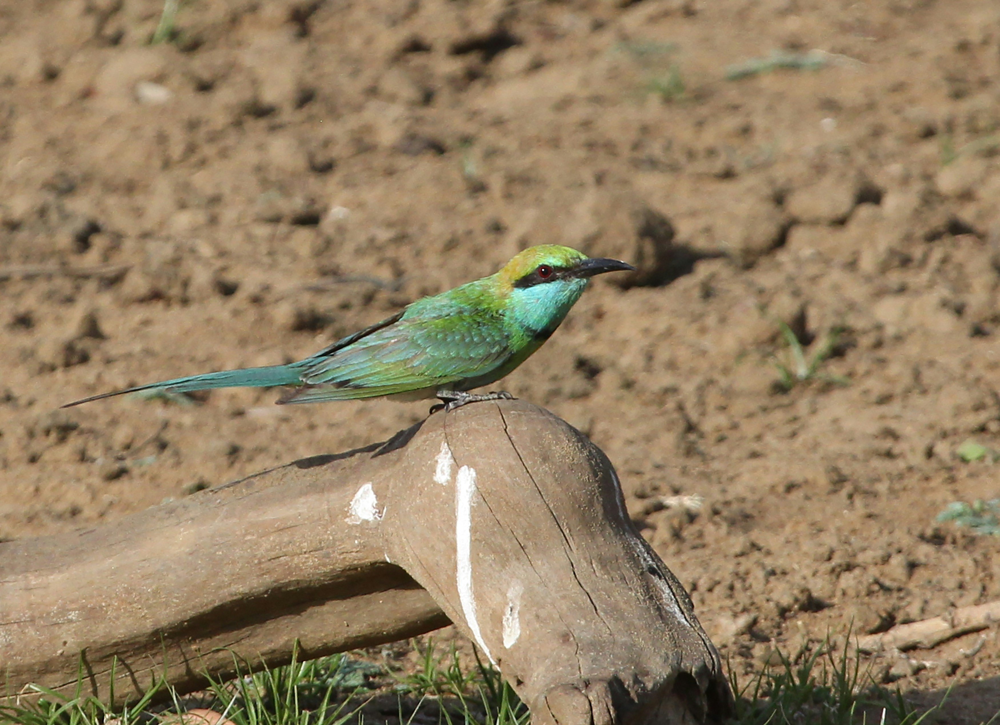

The Asian Green Bee-eater is a small, slender bird with vivid green plumage, a narrow black eye stripe, a pointed bill, and elongated central tail feathers. It is commonly found in open country, grasslands, agricultural areas, scrub, and woodland edges. Bee-eaters are accomplished aerial hunters and frequently sit on exposed branches, wires, or other perches while watching for insects. When prey is spotted, the bird launches into the air and catches it with remarkable precision before returning to its perch. Bees, wasps, dragonflies, and other flying insects form an important part of its diet. Its graceful flight and brilliant green plumage make it one of the most attractive birds of open habitats.
Family: Meropidae